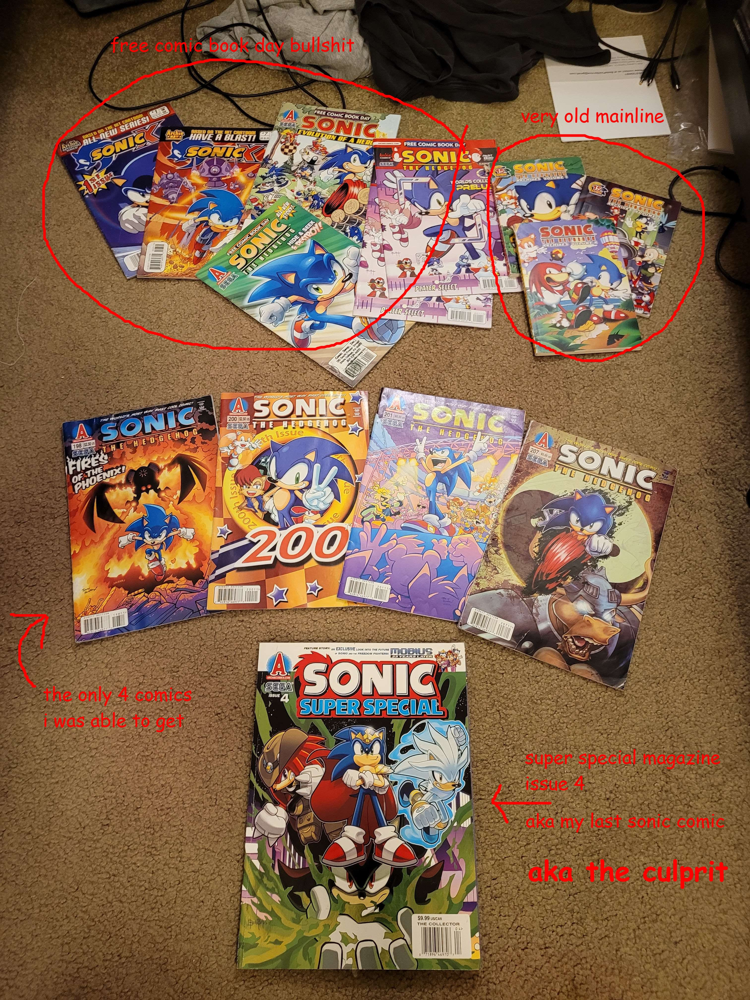
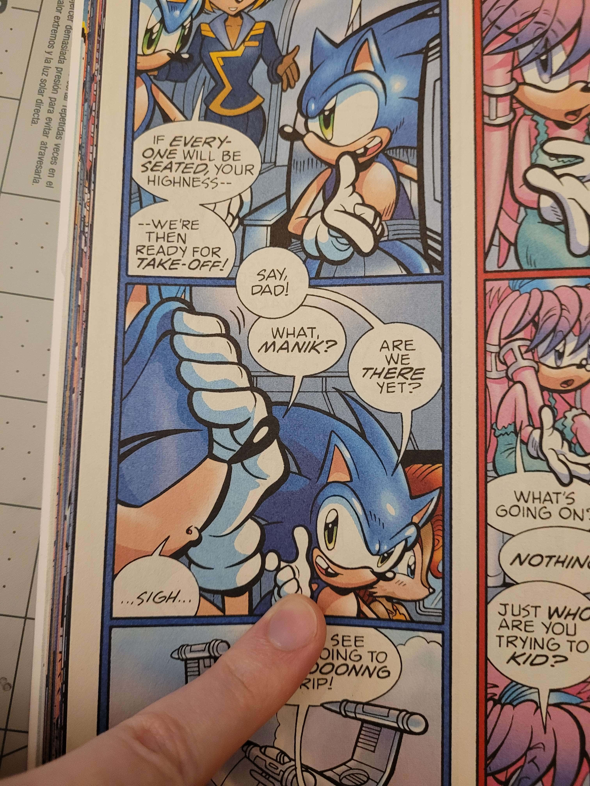
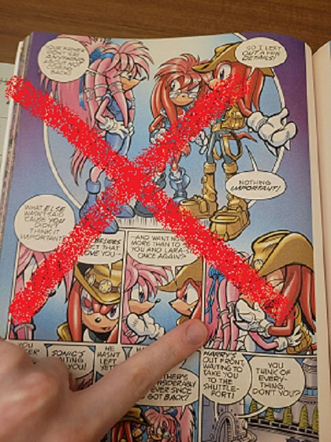
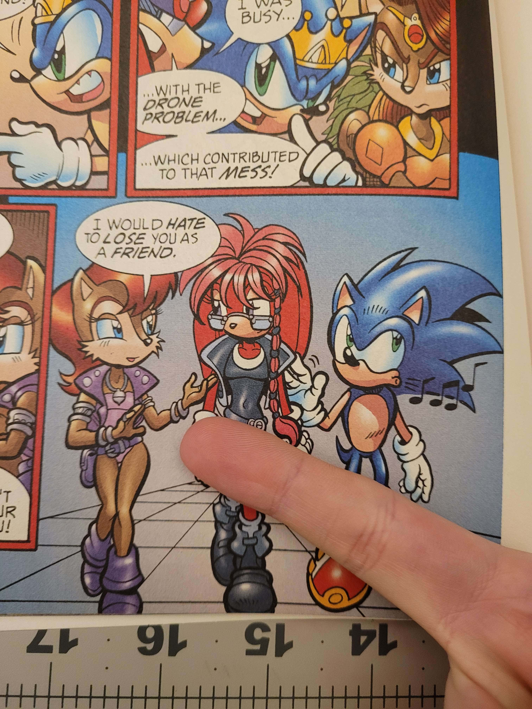

i want to read this again but flipping through this book is giving me the bends from unearthing how many times i would read this before bed.
when i was still in elementary i really loved sonic, but wasnt able to get my hands on the comics very often. they were just hard to find because every one else was interested in collecting and selling marvel and dc bullshit that i wasnt interested in. i only technically had 4 mainline comics even though i was dying of thirst for more from the mainline. i got free comic book day handouts instead.
and then there's this "super special" book (or magazine), which apparently is still from the god damn mainline. its just a compilation of 14 more comics that were further back into the plot than the 4 i already had.
in the first post here where sonic is found homeless on the streets, you saw sonic mention two characters called sonia and manik right? well guess what! they both show up earlier in this super special.
this is Manik the Hedgehog
and this is Sonia the Hedgehog

edit: thats julie-su rocking a different hair style, established wife of knuckles. i was confused by this snippet on a fandom wiki while trying to figure out who the fuck "sonia" is in the archie comics.
THIS is Sonia Acorn.
 manik is there on the left too, getting ready to be stupid againshe looks almost identical to Sally Acorn, and nothing like Sonia the Hedgehog.
does that clear things up?
no?
ok lemme make this more confusing.
back in the 1990s, sega also had some sonic cartoons made. which i also watched on netflix because i was a sucker for anything sonic. except a show that i fucking hated called Sonic Underground, which is popularly known for a baby falling and blowing up.
trust me thats the only part of the show you need to watch.
the premise of this (from my memory) is that this show takes place further back in history from the first game. this is the origin story of sonic and the freedom fighters. all the main characters are like 5 years old and they are on a mission to find their mother who abandoned them at birth. i didnt pay attention cause i thought the show was annoying and everyone was a baby and i didnt like that.
important thing is though, the three main characters are sonic, manic, and sonia, and they are all siblings. manic is also green this time yes that was him failing to catch the baby
so. how the fuck did they go from "sonic's siblings" to "sonic's children?" and why is sonia married to knuckles?
i dont know!!!!!!!!!!!
either way, the comics shown in this super special basically cover the whole story arc where all the timelines get blowed up and everything resets, which totally wasnt because archie needed to restart the series to make it more in-line with the games.
The Archie Sonic comics started in 1993, and they were based off of two things:
- The Sonic games released up to that point (Sonic 1 and 2)
- Sonic SatAM (the TV show)
All the writers had were Sonic, Tails,EggmanDr. Robotnik, and the Freedom Fighters (Sally Acorn and co.). So what did they do? They made shit up!
Big convoluted storylines! Alternate dimensions! Anti-Sonic! They even made sets of underwater and Australian Freedom Fighters for one-off jokes! And when Sonic 3 came out and Knuckles was introduced, the echidnas became a whole Thing with their own tribes and backstories and characters that ended up playing huge roles in the comic's story.
And that chost at the top, with the comic book panels, is about an alternate timeline. One where Sonic marries Sally Acorn and becomes the king. He has two kids, and things generally go well for everyone. Then one day he finds out there's trouble with the space-time continuum and his planet would be destroyed. He goes to the past to fix it, but he vanishes and everyone thinks he's dead. He still manages to change the past, though, which shifts the world into an alternate timeline.
Then, with Sonic presumed dead, Shadow conquers his kingdom and turns it into a brutal dictatorship where everyone worships Maria. But some people remember the old timeline where Sonic was king, and they search for him. Eventually, they find him living on the streets, with no home, no wife, and no kids... and that's when the dialog in the first chost happens.
There's a happy ending, though! They stage a coup, defeat Shadow, and crown Sonic king again. Then he marries Sally once more... and they have kids together!
sonic jumps into the time machine, is presumed dead, shadow takes over, starts a dictatorship, people who still remember sonic look for him, they find sonic (homeless and not allowed to cry), and they go and fucking kill shadow.
its kinda weird how this magazine skips around through issue numbers. they include issues 132 through 144, which all create the setup for why sonic has to jump into the time machine. and it ends with him jumping into the time machine. then it picks back up with 166 and 167 andddd its over to the "sonic universe" comics after that? its all very interesting though. weirdly good amount of depth for a storyline that isn't even really official.
i dont know how i would have understood any of what was happening in here when i was a kid. maybe i eventually understood it when i reread this thing for the 50th time, and then immediately forgot about it because i was a stupid child.
i should actually just sit down and read this shit again shouldnt i?